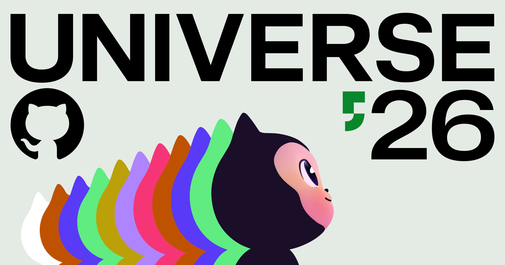
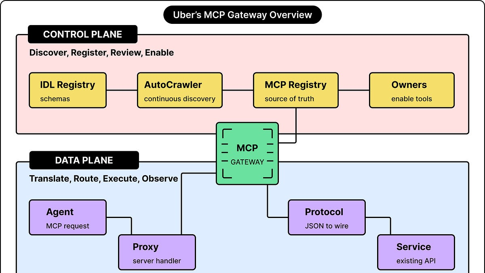
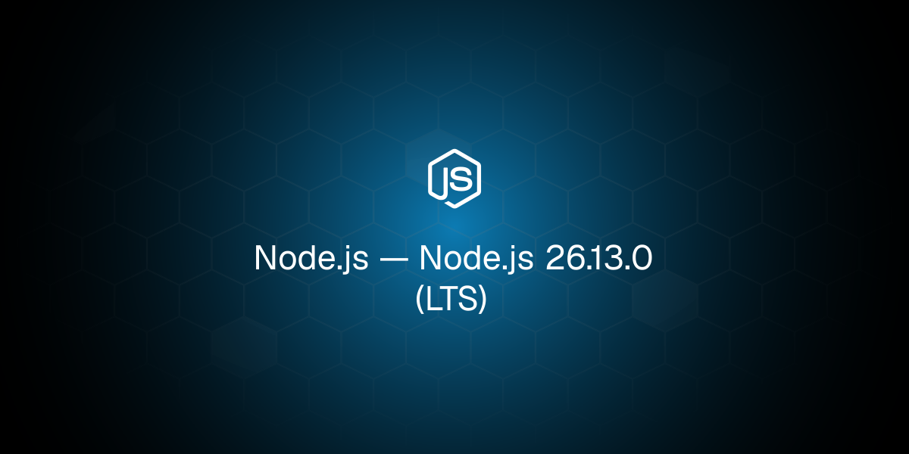
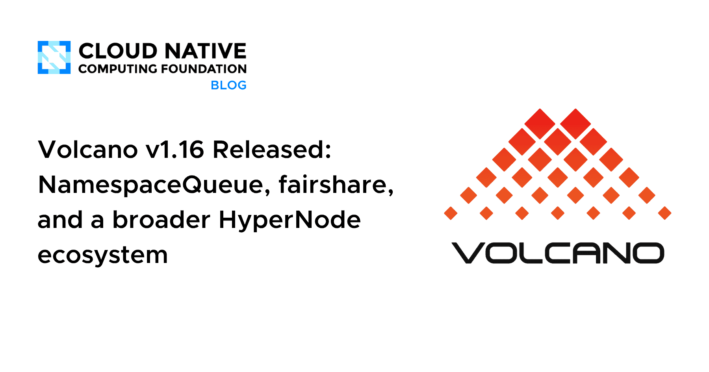
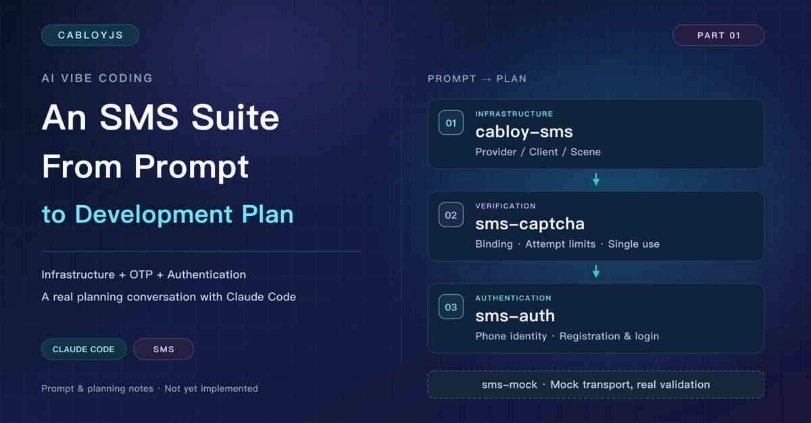
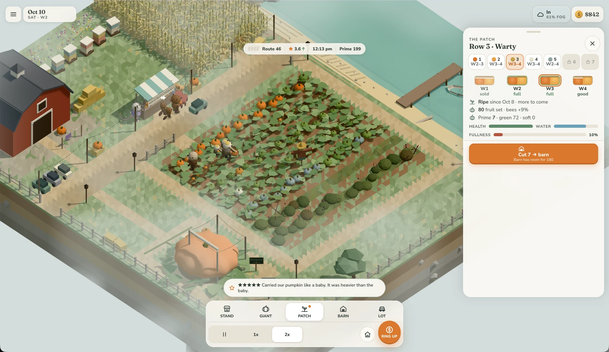
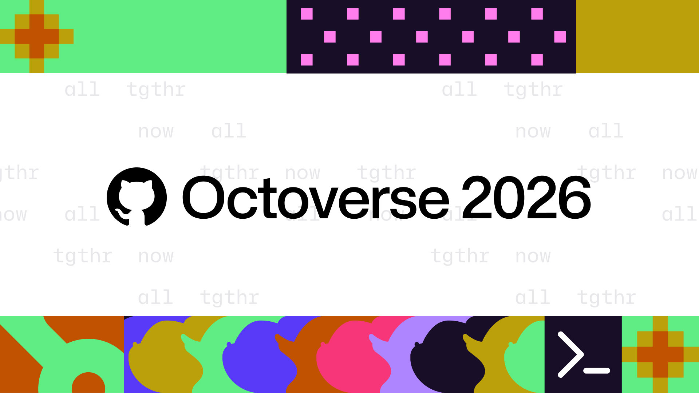
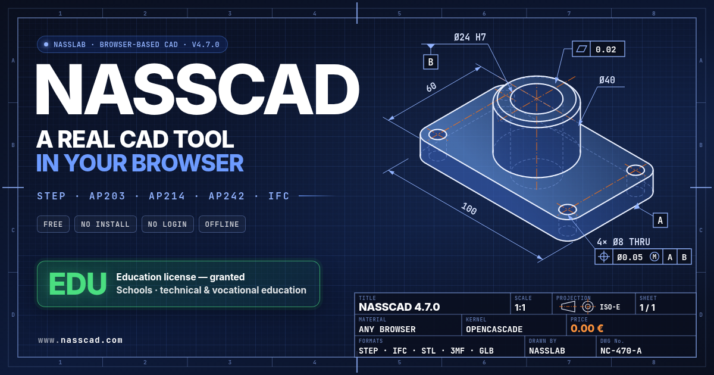

🔥 Top 3 (must read)
GitHub Universe 2026: Evolving every layer of the stack
GitHub laid out its plan to be a full end-to-end software delivery system, with agents built into every layer. The post is the keynote summary from Universe, so it is the best single place to see what is coming to Copilot, Actions, and the platform. Why it matters: your team lives in GitHub for code, review, and CI. Changes here will shape how your team adopts AI agents in the next year.

How Uber Built A Gateway For AI Agents To Access Tools
ByteByteGo walks through the gateway Uber built so AI agents can call internal tools in a safe and controlled way. It covers the design choices around auth, routing, and keeping agents inside limits. Why it matters: a real system design case study that mixes distributed systems with agent tooling. Useful if you ever let agents touch your Node.js services.

Ship It Conversations: AI Coding Outruns Software Delivery
Darko Fabijan (SuperPlane, Semaphore co-founder) talks about what breaks after the pull request when AI writes more of the code. Topics include change risk scores, onboarding AI agents like new engineers, read-only ops agents, and why the fix is more automation. Why it matters: this is the EM problem of 2026. Review and delivery are now the bottleneck, not writing code.
R
🛠 Tools & releases
Node.js 26.13.0 (LTS)
and Node.js 24.22.2 (LTS) — two LTS releases in one day. Check the changelogs and plan an upgrade for your backends.

Volcano v1.16 released
Kubernetes batch scheduler adds NamespaceQueue (per-tenant queue hierarchies) and a fairshare plugin that uses past resource use. Relevant if you run multi-tenant batch jobs on K8s.

🤖 AI for developers
Analysts followed AI agent's randomly assigned preferences in 86% of decisions
Anthropic research: when an agent made a judgment call, people followed it most of the time, even when the preference was random. A warning for anyone using agents in code review or planning.

AI Vibe Coding in Practice: An SMS Suite Prompt and Development Plan
a real prompt and the development plan Claude Code produced for an SMS module in a fullstack framework. A good example of "ask for a plan first" workflow.

The October inflection point for vibe game development
Simon Willison argues that coding agents are now good enough to build full games, the way they became daily drivers for software work in late 2025.

👔 Engineering & teams
Octoverse 2026: Commits and pushes reach new highs as developers build with agents
GitHub's yearly report. Simon Willison's live notes from the keynote pull out the key charts.

Amazon's guideline for engineers on AI (quoted by Simon Willison)
"If your work does not benefit from current AI tooling, that is a finding, not a failing." A clear way to frame AI adoption with a team: document where it does not help and bring that to the manager.
S
🎯 For me
Node.js LTS upgrades: both the 24 and 26 LTS lines got a release. Worth a quick dependency check on your backends.
Delivery after the PR: the Ship It conversation is the closest match to your EM concerns. Change risk scores and read-only ops agents are two ideas you could test in your pipeline.
How teams adopt AI: the Amazon guideline gives you ready-made language for a team norm. The Anthropic "86%" study is a reason to keep humans owning judgment calls in review.
💡 App ideas & indie builds
SlideBySide – Present slides without sharing your screen
(HN discussion) — the app lets you show slides in a call without screen sharing. The problem: screen share is slow, low quality, and shows your whole desktop. Inspiration: a small, focused fix for a pain everyone in remote meetings has.
S
Nasscad – local-first 3D CAD for browser and Windows
(HN discussion) — a CAD tool that keeps all data on your machine and runs in the browser. The problem: cloud CAD tools lock in your files and need an account. Inspiration: "local-first" is a strong selling point for pro tools.

Yavashark: I've Built a JavaScript Engine Every Day for 950 Days
(HN discussion) — one person built a JS engine with daily commits for almost three years. Not a product, but a good story about how a small daily habit adds up to a big project.
Y
🎓 Try this
Copy the "plan first" workflow from the SMS suite prompt and development plan. Before Claude Code writes any code, give it the goal, constraints, and existing modules, and ask only for a plan. Review the plan, fix it, then let it build. Try it on one small feature this week and compare the result with your usual flow.